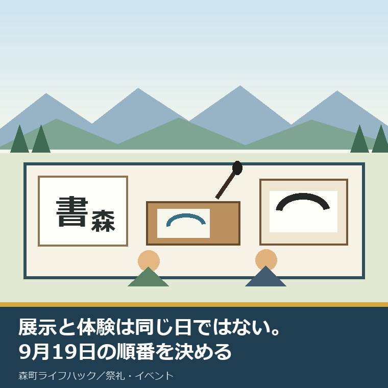
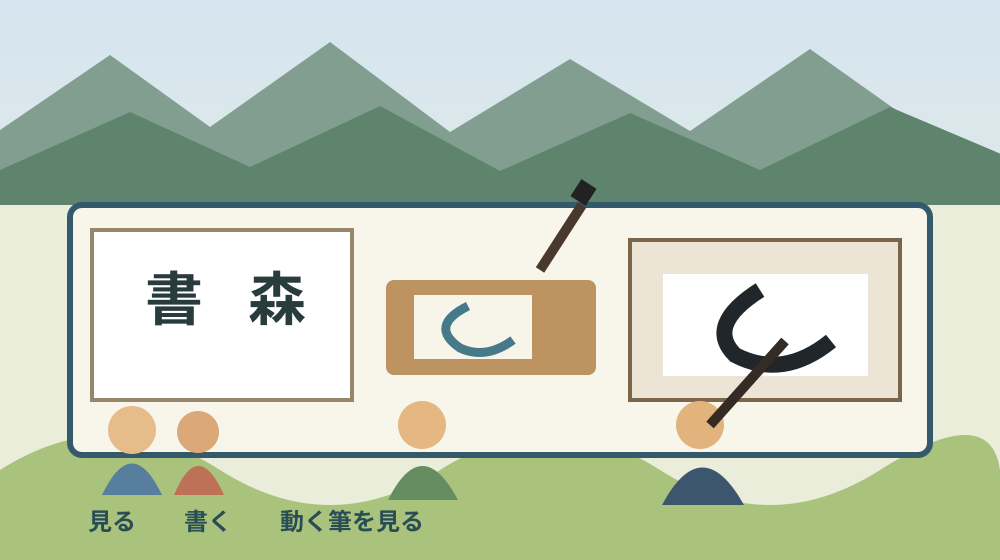
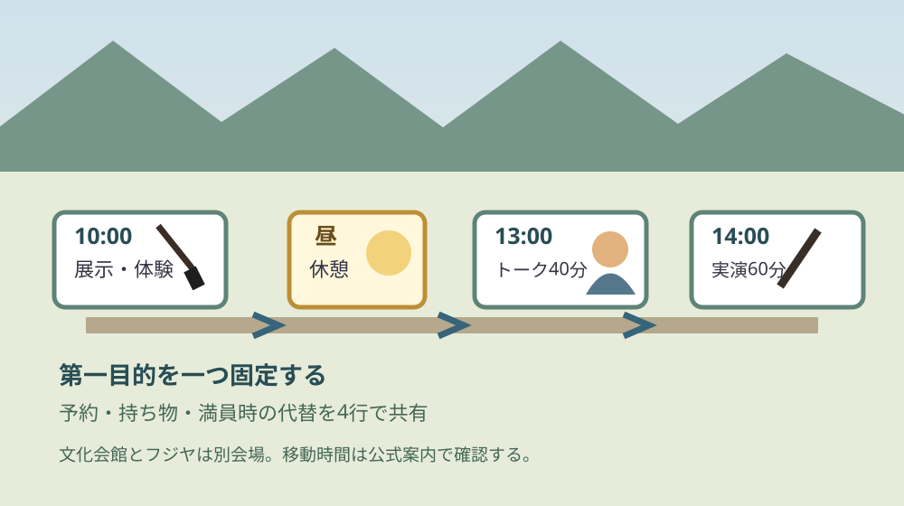

森町書道フェスタ2026｜9月19日の展示と体験

この記事の要点
Q. 森町書道フェスタ2026は、作品を見る日と体験する日が同じですか。
A. 作品展は2026年8月27日から9月23日までですが、体験・トーク・実演が集まるのは9月19日です。展示ギャラリーの公開も9月19日から23日に限られます。家族で行くなら、予約済み講座、予約不要の体験、13時のトーク、14時の高校書道部実演を分け、参加したい時間を一つ先に決めます。
森町公式の「森町書道フェスタ2026」を2026年9月5日に確認しました。ページの更新日は2026年8月20日です。
家族が迷いやすいのは、8月27日からの作品展と、9月19日の催しを同じ一日だと思ってしまうことです。
作品を静かに見たい人と、筆を持ちたい子どもでは、選ぶ日も滞在時間も変わります。
この記事では、公式ページに書かれた日付、時刻、定員、材料費、持ち物を事実として整理します。
その後で、催しを支える講師、高校書道部、町内書道教室、会館職員、ご家族の負担を私の意見として考えます。
体験ストックには、この催しへ私が参加した記録がありません。見ていない場面を、見たようには書きません。
分からない点も残ります。全体の入場料、駐車場の当日運用、各企画の部屋、予約枠の残数は公式本文で確認できませんでした。
作品展は8月27日から、展示ギャラリーは9月19日から
杭迫柏樹寄贈作品展の期間は、2026年8月27日木曜日から9月23日水曜日までです。
森町出身の書家、杭迫柏樹氏の作品を、文化会館の常設展示と展示ギャラリーで展示すると案内されています。
意外なのは、展示ギャラリーの期間だけが9月19日から23日までの5日間に限られることです。
8月27日から全ての展示場所を同じように見られるわけではありません。見たい場所まで決めて日を選びます。
杭迫柏樹寄贈作品展との連携企画「旧藤江勝太郎家で出会う書の世界」は、9月12日から23日までです。
連携企画の場所は、日本烏龍紅茶会社発祥の地フジヤ、森町旧藤江勝太郎家住宅です。
時間は9時から17時までで、9月23日の最終日だけ16時までです。文化会館とは会場が別なので、同じ建物内を移る感覚では組めません。
森町の文化財を保存と活用の両面から読んだ記事も、建物と催しを一緒に見るときの補助になります。
9月19日は四つの時間帯に分けて見る
2026年9月19日土曜日は、午前の体験、13時の話、14時の実演、10時から15時の展示が重なります。
筆の魅力を味わうワークショップは10時から11時30分までです。事前申込みは8月5日午前6時に始まりました。
公式案内では各講座が先着順で、定員に達した時点で締切です。2026年9月5日時点の残数は本文に表示されていません。
杭迫柏樹氏のギャラリートークは13時から13時40分までです。2025年の様子を示す写真はありますが、2026年の参加人数は未確認です。
高校書道部による書道パフォーマンスは、大ホールで14時から15時までです。
出演として浜松修学舎高等学校書道部と磐田西高等学校書道部の名が掲載されています。
町内書道教室の生徒と遠江総合高等学校書道部の書道展示は、10時から15時までです。
もりまちふらり書道も10時から15時までで、申込みと持ち物が不要と明記されています。
午前から全てを追うと滞在は5時間になります。昼食、子どもの休憩、会場内の移動を予定表の空白として残します。
展示、体験、実演は同じ「書」でも準備が違う
森町書道フェスタ2026では、鑑賞する展示、手を動かす体験、筆運びを見る実演を分けて選ぶと、家族の予定が具体になります。
展示は、8月27日から9月23日という期間の中で日を選べます。ただし、展示ギャラリーまで見たい場合は9月19日から23日です。
ワークショップは9月19日午前の90分に集まります。申込み、材料費、道具が講座ごとに違うため、参加者の名前だけでなく講座名まで家族で共有します。
ふらり書道は10時から15時までで、申込みも持ち物も不要です。予約枠を取れなかった家族が、書く体験そのものを諦めずに済む選択です。
ギャラリートークは40分です。作品を先に見てから話を聞くのか、話を聞いた後で見直すのかによって、展示に必要な時間が変わります。
高校書道部の実演は大ホールで60分です。小さな子どもと見る場合は、入退場の扱い、座る場所、途中で席を立てるかを現地で確認します。
文化会館とフジヤの連携企画を同じ日に回るなら、9時から17時というフジヤの開場時間だけで移動可能とは判断できません。
両会場の距離、駐車場所、徒歩での移動時間は公式の催し本文に数値がありません。地図と当日の案内を別に確かめます。
私なら、初めて行く家族には、文化会館の中で第一目的を一つ達成する予定を勧めます。二会場を埋めることより、子どもが一本の筆を落ち着いて持てる方を選びます。
全企画を回らなくても、催しへの参加です。選ばなかった企画を失敗と数えないことが、家族の余白になります。

四つの体験は定員・材料費・持ち物が違う
みんなの書道教室は、初心者から経験者までを対象にした毛筆講座です。定員8人、材料費500円です。
持ち物は筆、文鎮、下敷き、硯です。道具がない人には貸出があり、紙と墨は会場側が用意します。
のし紙講座は定員7人、材料費700円です。のし紙と筆ペンは用意され、持ち物はボールペンと便箋です。
絵手紙は定員10人、材料費50円です。持ち物は筆ペンと絵の具で、絵の具がない人には貸出があります。
己書は10時から11時30分の間に、1回30分を3回行います。各回の定員は4人、材料費50円、持ち物なしです。
己書だけは当日参加も可能と書かれています。ただし、3回で最大12人という枠は変わらないため、当日の空きを確約する案内ではありません。
四講座の定員を単純に足すと延べ37枠です。これは私の足し算で、町が「37人参加できる」と公表した数字ではありません。
兄弟で別の講座を選ぶと、材料費だけでなく、保護者がどこで待つかも決める必要があります。
予約済みの人は、申込完了画面、講座名、人数、持ち物、材料費を一枚のメモにします。
予約していない家族は、申込み不要のふらり書道を軸にすると、残数が分からない講座だけを当てにせずに済みます。
良い点：見る、聞く、書くが一日にそろう
良い点の一つ目は、寄贈作品、町内の学び、高校生の実演を別々の入口から見られることです。
完成した作品だけでなく、筆が動く時間を大ホールで見られます。子どもが「書は静かな展示だけ」と思わずに済みます。
二つ目は、50円、500円、700円と、体験ごとの材料費が公式ページに書かれていることです。
家族は人数分の費用を事前に足せます。現金の要否や支払方法は本文で確認できないため、会館へ聞く余地も分かります。
三つ目は、道具の貸出条件が講座ごとに示されていることです。全部を買いそろえる前に、借りられる物を分けられます。
四つ目は、予約不要の水書道があることです。予定が固まらない家族にも、当日選べる入口が残っています。
森町文化会館の大ホールと2026年度公演を整理した記事を合わせると、会館の規模と問い合わせ先も確認できます。
注文したい点：移動と満員時の代替を公式案内に足したい
その上で、私は公式案内に注文したい点があります。家族が当日動くための情報が、一枚では完結していません。
各ワークショップを行う部屋、受付場所、支払方法、保護者の同伴条件は、確認した本文では分かりません。
駐車場の利用範囲、混雑時の案内、フジヤとの移動方法も未確認です。町外から来る家族ほど、この空白が移動の負担になります。
先着講座の残数表示がないと、行けるかどうかを決める最後の電話が会館側へ集中します。
講師、書道教室、高校書道部、会館職員は、作品や実演の準備だけでなく、搬入、受付、片付けまで担います。
参加者が時間と持ち物を確認して来ることは、支える側の説明を一回減らします。小さくても現場の負担を軽くする行動です。
持ち物の不足があれば、貸出できる物とできない物の確認が受付に増えます。公式ページで分かる範囲を家で分けておけば、必要な相談だけを会場へ残せます。
終了時刻を守ることも同じです。講座の後には机、紙、墨、筆、展示物を整える時間があると考え、次の企画へ慌てて道具を置いたまま移動しません。
作品を撮影してよいか、子どもの作品を持ち帰れるかは本文で確認できません。会場の掲示と係の案内を優先します。
これは来場者を縛る話ではありません。担い手の説明、片付け、作品管理を増やさないための、参加する側の段取りです。
地域の催しを支える時間と役割を考えた記事では、見物する側からは見えにくい準備を整理しています。
森町の催しで移動と交通マナーを確認する記事も、家族の車で向かう前の確認に使えます。

対案・結論：家族の第一目的を一つだけ決める
家族で行くなら、最初に「体験する」「話を聞く」「実演を見る」のどれを第一目的にするか決めます。
予約済みの講座があるなら、その10時から11時30分を固定します。受付時刻は公式本文で未確認なので、会館へ確かめます。
ギャラリートークが第一なら、13時の開始より前に展示を見る時間を置きます。40分のトーク後、14時の実演へ移る余白も確認します。
高校書道部の実演が第一なら、14時から15時を固定し、午前は子どもの体力に合わせてふらり書道か展示を選びます。
満員だったときの代替は、申込み不要のふらり書道、10時から15時の書道展示、8月27日からの寄贈作品展です。
今日できる小さな一歩は、紙に「第一目的、到着目安、持ち物、満員時の代替」を4行で書くことです。
そのメモを家族で共有すれば、現地で全員が別の企画を探して疲れる状態を減らせます。
家族に残す記録：作品名より先に日付と会場を書く
催しの記録には、2026年9月19日、森町文化会館、参加した企画名、材料費、持参した道具を書きます。
連携企画へ行った場合は、フジヤと文化会館を別の会場として記します。写真の撮影可否は現地の表示に従います。
子どもの作品を保管するなら、作品の裏に日付と催し名を書きます。作者名は公開用の写真へ不用意に写しません。
来年の判断に役立つのは、楽しかったという感想だけではありません。到着時刻、混雑、駐車場所、待ち時間も残します。
施設の使い方や当日の運用は変わり得ます。2026年の記録を、次回の公式案内より優先して使わないことも書いておきます。
大石の視点：催しは、来場者以外の時間でできている
大石浩之（磐田市／不動産業）として、私はこの催しの「見る、聞く、書く」がそろう設計を良いと思います。
一方で、私は当日の現場を見ていません。講師や生徒が実際に何時間準備するか、誰が片付けるかは分かりません。
分からないからこそ、負担を軽く扱わない。催しは来場者の5時間だけでできているのではありません。
作品の制作、選定、額装、搬入、展示、受付、道具の準備、床の保護、撤去まで、複数の担い手の時間が重なります。
町の人がすでに払っている努力を認めた上で、続ける条件を考える必要があります。担い手と後継、移動、維持費は別々の問題です。
私は、参加者が公式情報を読んで持ち物と時間をそろえることも、催しを支える一部だと言い切ります。
原則3の是々非々で見ると、選べる企画の幅は良い点です。注文は、支える人へ質問が集中しない案内の整備です。
まとめ：展示の日、体験の日、連携企画を分ける
森町書道フェスタ2026の寄贈作品展は8月27日から9月23日、展示ギャラリーは9月19日から23日です。
フジヤの連携企画は9月12日から23日で、9時から17時、最終日は16時までです。
9月19日は、10時から体験と展示、13時からギャラリートーク、14時から高校書道部の実演があります。
予約、残数、受付場所、駐車場など未確認の条件は、森町文化会館へ出発前に問い合わせます。
家族の第一目的を一つ決め、支える側の説明を増やさない準備をして出かける。それが今日の結論です。
よくある質問
Q1. 森町書道フェスタ2026の作品展はいつですか。
A1. 杭迫柏樹寄贈作品展は2026年8月27日から9月23日までです。文化会館の常設展示と展示ギャラリーで作品を見られますが、展示ギャラリーでの展示は9月19日から23日までに限られます。来館前に公式ページで当日の開館状況を確認してください。
Q2. 9月19日に予約なしで体験できるものはありますか。
A2. もりまちふらり書道は10時から15時までで、申込みと持ち物が不要です。水で書く水書道や、筆ペンで半紙・折り紙に書く体験が案内されています。己書も公式案内では当日参加可ですが、1回4人の3回開催なので空き状況は当日に確認します。
Q3. 家族で一日見るなら、どの順番が分かりやすいですか。
A3. 午前は10時から15時の書道展示とふらり書道、予約済みなら10時から11時30分のワークショップを見ます。13時から13時40分はギャラリートーク、14時から15時は大ホールの高校書道部パフォーマンスです。昼食、移動、子どもの休憩時間も先に決めます。
参考にした公式情報
- 森町書道フェスタ2026／静岡県森町（2026年8月20日更新。作品展、連携企画、9月19日の時間、定員、材料費、持ち物を2026年9月5日に確認）
- 森町文化会館の施設紹介／静岡県森町（施設名と所在地、文化会館の案内を2026年9月5日に確認）

磐田市で小さな不動産業を営みながら、森町の空き家・農地・実家じまいの相談を受けています。地域と不動産実務をつなぐ目線で確認の順番を書きます。
最終確認日：2026-09-05 ／ 日時、内容、定員、材料費、持ち物は変わることがあります。予約枠の残数、全体の入場料、各企画の部屋、支払方法、駐車場の当日運用は確認できていません。出発前に森町公式ページと森町文化会館で最新情報を確認してください。